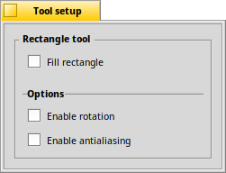

The Rectangle tool - R
|  |
This tool creates a rectangle. and you get to rotate the rectangle after you've drawn it. to avoid jagged edges. Holding SHIFT creates a square, holding ALT creates the rectangle from center-to-corner instead of from corner-to-corner. The quick key to choose the aribrush tool is R. |
Back: The Straight Line tool Next: The Ellipse tool